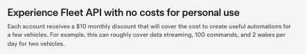
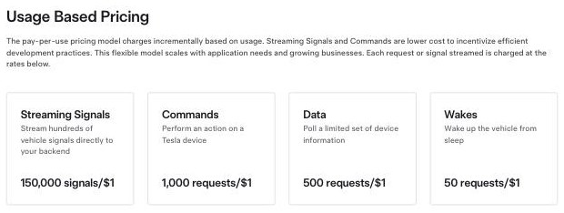
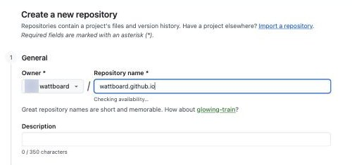
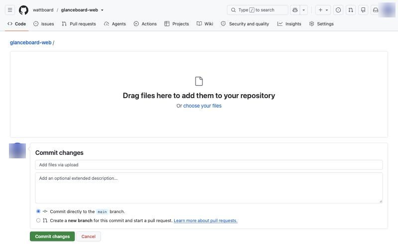
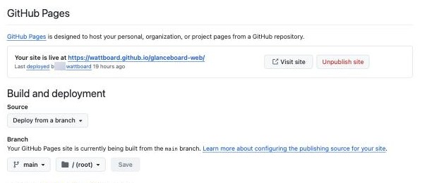

Modo avanzado: datos de Tesla cuando falla el Bluetooth
Guía paso a paso · Glanceboard
Próximamente. El modo avanzado está en preparación y llegará en una próxima versión de Glanceboard. Esta guía explica cómo funcionará y qué habrá que hacer, para que puedas decidir con calma si te interesa.
En resumen
- Es opcional. Sin él, Glanceboard funciona exactamente igual que ahora, por Bluetooth.
- Usa la API oficial de Tesla con tu propia cuenta de desarrollador de Tesla, solo en los momentos en que el coche no envía los datos por Bluetooth.
- Tesla regala 10 $ al mes a cada cuenta. Glanceboard se para sola antes de gastarlos, así que con un uso normal no pagas nada.
- Tesla pide una tarjeta como requisito para dar de alta la cuenta. Con el tope de Glanceboard y el límite de gasto de 10 $ que pondrás en el paso 4, no se cobra nada.
- Al llegar al tope del mes, Glanceboard vuelve a usar solo el Bluetooth, con sus limitaciones, hasta el mes siguiente.
- Se configura una sola vez y lleva unos 30 minutos.
Qué es y para qué sirve
Glanceboard recibe los datos directamente del coche por Bluetooth: velocidad, potencia, marcha, kilómetros… Es rápido, gratuito y no necesita internet.
Pero el Bluetooth del coche tiene un límite: cada respuesta tiene que caber en un mensaje. Con una ruta puesta en el navegador del coche, la respuesta con la velocidad y la potencia a menudo no cabe, y el coche directamente no la envía. Es un límite del coche, no de la app. En esos momentos Glanceboard:
- saca la velocidad del GPS del móvil;
- marca el consumo en rojo como aproximado, porque le faltan los datos de potencia de esos ratos.
El modo avanzado rellena esos huecos. Mientras el Bluetooth no da los datos, Glanceboard se los pide a Tesla por internet. Así el consumo del viaje sale completo.
Es un servicio de Tesla, bajo su control
- El modo avanzado usa la Fleet API, el servicio oficial de Tesla para desarrolladores. Lo gestiona Tesla: las altas, las aprobaciones, los precios, los límites y la facturación son suyos.
- La cuenta de desarrollador es tuya y la factura, si la hubiera, te la emite Tesla, no Glanceboard. Glanceboard no cobra nada por este modo.
- Tesla puede cambiar sus precios o sus condiciones cuando quiera. Si lo hace, actualizaremos esta guía y el tope de la app.
- Glanceboard es una app independiente, sin relación con Tesla, Inc. Tesla es una marca de Tesla, Inc.
Cuándo se usa (y cuándo no)
Glanceboard pide datos a Tesla solo cuando se cumplen estas cuatro cosas a la vez:
- el coche lleva más de 5 segundos sin enviar los datos de conducción por Bluetooth, que es lo que pasa con una ruta puesta;
- el coche está en marcha;
- el móvil tiene internet;
- tienes el modo avanzado activado.
En cuanto el Bluetooth vuelve a dar los datos, deja de consultar. Mientras tanto hace una consulta cada 15 segundos, con la velocidad, la potencia, la marcha y el cuentakilómetros. Nunca pide la ubicación, porque ya la tiene el GPS del móvil, y nunca despierta el coche.
Sin ruta, el Bluetooth da todos los datos y el modo avanzado no gasta nada.
Cuánto cuesta
Tesla cobra por uso. Cada consulta de datos cuesta 1 $ por cada 500, es decir, 0,002 $. Pero cada cuenta tiene un descuento de 10 $ al mes, que equivale a 5.000 consultas gratis.


Por qué no pagarás nada:
- Glanceboard cuenta las consultas del mes y se para sola a las 4.500, que son 9 $, por debajo de los 10 $ gratuitos.
- Además, en el paso 4 pondrás en Tesla un límite de gasto de 10 $. Si por lo que fuera se llegara a él, Tesla corta la API hasta el mes siguiente en lugar de cobrar más.
- La tarjeta es un requisito de Tesla para tener la cuenta activa. Mientras el gasto no pase de los 10 $ gratuitos, no se te cobra nada.
Al llegar al tope, Glanceboard sigue funcionando solo con el Bluetooth, con sus limitaciones, hasta que empieza el mes siguiente. En Ajustes verás cuántas consultas llevas.
Cuántos kilómetros cubre al mes
Según las pruebas de la beta, el coche no corta los datos todo el rato. Lo hace a rachas, sobre todo al poco de poner la ruta: unos 5 minutos por viaje de media, alrededor de una cuarta parte del tiempo con ruta. Con el tope de 4.500 consultas:
| Tipo de conducción, con la ruta siempre puesta | Kilómetros al mes, aproximados |
|---|---|
| Ciudad o carretera mixta (unos 35–60 km/h de media) | unos 2.700 km o más |
| Autovía (unos 100 km/h de media) | hasta unos 7.500 km |
| Sin ruta puesta | ilimitados: no se consulta nada |
Son estimaciones con pocos viajes de prueba y un solo coche. La cifra de autovía es la más dudosa: no hay todavía viajes largos de autovía con ruta medidos. Para un conductor normal, de 1.000 a 1.500 km al mes, sobra con la parte gratuita.
Lo que necesitas
- Tu cuenta de Tesla, la misma de la app de Tesla, con la verificación en dos pasos activada.
- Una tarjeta para el requisito de Tesla. No se cobra nada; mira Cuánto cuesta.
- Una cuenta gratuita de GitHub (github.com/signup), o una web propia si ya tienes una.
- Glanceboard en el móvil, con la versión que traiga el modo avanzado, y unos 30 minutos. Mejor desde un ordenador para los pasos 2 a 4.
¿Por qué hace falta una web? Tesla exige que cada aplicación publique una «clave pública» en una dirección web suya, para comprobar quién la ha creado. Con GitHub Pages esa web es gratuita y tuya: https://tuusuario.github.io. Glanceboard no tiene servidor y no ve nada de esto.
Paso 1Crea tu clave en Glanceboard
- En Glanceboard, abre Ajustes › Modo avanzado y pulsa Crear clave.
- La app genera un archivo llamado
com.tesla.3p.public-key.pem. Pulsa Compartir y guárdalo donde lo encuentres desde el ordenador, por ejemplo en iCloud Drive, Google Drive o enviándotelo por correo.
Es una clave pública, y es normal que se publique. La parte privada se queda guardada en tu móvil y no sale de él.
Paso 2Publica la clave en tu web
Con GitHub (gratis)
- Entra en GitHub con tu cuenta y abre la plantilla de Glanceboard:
github.com/wattboard/glanceboard-tesla-key. Pulsa Use this template › Create a new repository. - En Repository name escribe exactamente
tuusuario.github.io, con tu nombre de usuario de GitHub. Deja Public marcado y pulsa Create repository.
El nombre del repositorio tiene que ser tu usuario seguido de .github.io. En la imagen, el usuario es «wattboard». - En tu repositorio nuevo, entra en la carpeta
.well-knowny luego enappspecific. Pulsa Add file › Upload files, arrastra el archivo del paso 1 y pulsa Commit changes. Si GitHub pregunta si quieres reemplazar el archivo vacío de la plantilla, di que sí.
Arrastra el archivo a la zona de arriba y pulsa «Commit changes». - Ve a Settings › Pages. En Build and deployment, elige Deploy from a branch, la rama main y la carpeta / (root), y pulsa Save. Al cabo de uno o dos minutos aparece «Your site is live at https://tuusuario.github.io».

Settings › Pages: publicar desde la rama «main» y la carpeta «/ (root)».


Qué trae la plantilla:
.nojekyll: sin este archivo, GitHub no publica las carpetas que empiezan por punto, y Tesla no encontraría la clave. No lo borres.callback/: una página que, al terminar el inicio de sesión con Tesla, devuelve el control a Glanceboard. No guarda ni envía nada..well-known/appspecific/: la carpeta donde va tu clave.
Con una web propia
Si ya tienes un dominio, sube los mismos archivos de la plantilla a tu web, de forma que estas dos direcciones funcionen:
https://tuweb/.well-known/appspecific/com.tesla.3p.public-key.pemhttps://tuweb/callback/
Comprueba que se ve
En Glanceboard, escribe la dirección de tu web (https://tuusuario.github.io) y pulsa Comprobar. La app confirma que Tesla podrá leer la clave. Si dice que no la encuentra, espera un par de minutos y vuelve a probar: mira Problemas frecuentes.
Paso 3Crea tu aplicación en Tesla
- Entra en developer.tesla.com con tu cuenta de Tesla y pulsa para crear una aplicación nueva.
- Rellena el formulario:
Campo Qué poner Nombre de la aplicación El que te propone Glanceboard, por ejemplo Glanceboard-7K3Q. Tesla no admite nombres repetidos.Descripción y uso Uso personal con mi propio coche: leer velocidad y potencia cuando el Bluetooth no las envía. Allowed origin (origen permitido) https://tuusuario.github.io, o tu webRedirect URI (dirección de vuelta) https://tuusuario.github.io/callback/, o la de tu web. Glanceboard te la deja lista para copiar.Permisos (scopes) Solo Vehicle Information (información del vehículo). No marques ubicación, órdenes ni carga. - Envía la solicitud. Tesla la revisa; normalmente la aprueba en poco tiempo, pero puede tardar.
Paso 4Pon la tarjeta y el límite de gasto
- En el panel de tu aplicación, entra en Billing and usage (facturación y uso).
- Pulsa Manage Payment y añade la tarjeta. Es un requisito de Tesla: sin forma de pago, Tesla desactiva la aplicación.
- Pulsa Update Limit y pon 10 como límite de gasto mensual.
Con este límite y el tope de 4.500 consultas de Glanceboard, el gasto se queda dentro de los 10 $ gratuitos de cada mes y no se cobra nada. Tesla te avisa por correo si se llega al 80 % del límite.
Paso 5Copia tus credenciales
- Cuando Tesla apruebe la aplicación, en su panel verás el Client ID y el Client Secret.
- Cópialos y pégalos en Glanceboard, en Ajustes › Modo avanzado. Se guardan cifrados en tu móvil y no salen de él.
El Client Secret es como una contraseña: no lo compartas con nadie ni lo publiques en GitHub.
Paso 6Conecta
- En Glanceboard, pulsa Iniciar sesión con Tesla.
- Se abre la página de Tesla. Entra con tu cuenta y acepta el permiso de información del vehículo.
- Glanceboard registra tu web en Tesla, comprueba que todo funciona y te muestra Listo.
Después
- No tienes que hacer nada más: el modo avanzado actúa solo cuando hace falta.
- En Ajustes › Modo avanzado verás cuántas consultas llevas este mes, por ejemplo «1.240 de 4.500».
- No borres la clave de tu web ni el repositorio: Tesla la comprueba de vez en cuando.
- Puedes desactivar el modo cuando quieras desde Ajustes. Para dejarlo del todo, borra también la aplicación en developer.tesla.com y, si quieres, el repositorio de GitHub.
- En tu cuenta de Tesla (en la app de Tesla, en la parte de aplicaciones de terceros) puedes ver y retirar el acceso de tu aplicación en cualquier momento.
Problemas frecuentes
Glanceboard dice que no encuentra la clave
- GitHub tarda unos minutos en publicar los cambios. Espera y vuelve a pulsar «Comprobar».
- Revisa que el repositorio se llama exactamente
tuusuario.github.ioy que Pages está activado (paso 2). - Revisa que el archivo
.nojekyllsigue en el repositorio y que la clave está en.well-known/appspecific/con el nombrecom.tesla.3p.public-key.pem.
Tesla dice que el nombre de la aplicación ya existe
Pulsa «Otro nombre» en Glanceboard y usa el nuevo.
Tesla todavía no ha aprobado la aplicación
La aprobación es cosa de Tesla y a veces tarda. Glanceboard sigue funcionando por Bluetooth mientras tanto. Cuando la apruebe, sigue en el paso 5.
Me ha llegado un correo de facturación de Tesla
Tesla puede enviar avisos de facturación o de uso aunque no haya nada que pagar. Si alguna vez ves un importe distinto de 0, escríbenos con una captura (tapando tus datos) y lo revisamos.
He cambiado de móvil
La clave privada se queda en el móvil antiguo. En el nuevo, vuelve a crear la clave (paso 1) y sube el archivo nuevo a tu web en lugar del antiguo (paso 2). Tu aplicación de Tesla y tus credenciales siguen valiendo.
Glanceboard dice «Tope del mes alcanzado»
Hasta el día 1 del mes siguiente, Glanceboard usa solo el Bluetooth, con sus limitaciones: con una ruta puesta, la velocidad sale del GPS y el consumo puede salir como aproximado.
Privacidad
- Los datos van directamente de Tesla a tu móvil. Ni Glanceboard ni ningún servidor intermedio los ve.
- Tus credenciales y tu sesión de Tesla se guardan cifradas en tu móvil.
- Tu web solo publica la clave pública que Tesla exige. La página de vuelta no guarda nada.
- Glanceboard no pide tu ubicación a Tesla.
Más información en la política de privacidad. La guía en PDF: Glanceboard-modo-avanzado.pdf. Dudas: madag.madag@gmail.com.
Glanceboard es una app independiente, sin relación con Tesla, Inc. Tesla es una marca de Tesla, Inc. Precios y condiciones de Tesla consultados en noviembre de 2026.